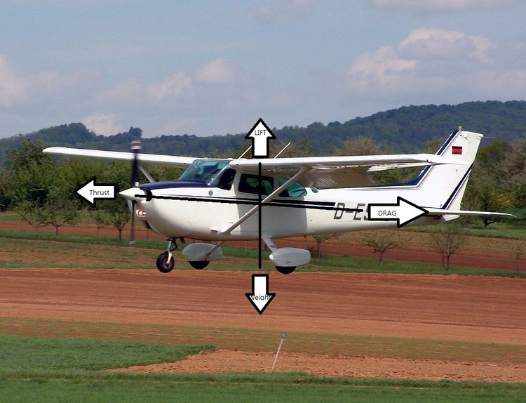

<비행역학의기본>
비행역학의기본
항공기가 비행 중에 항공기에 작용하는 기본적인 4가지 힘
항공기에 작용하는 힘은 여러 가지가 있지만 가장 기본적으로 비행하는 데에 있어 이해해야할 힘은 4가지로 추력(Thrust), 항력(Drag), 양력(Lift), 중력(Gravity) 혹은 무게(Weight)가 있다.

추력은 양력을 만든다 추력에 의해 항공기는 앞으로 전진, 이는 정지해 있는 공기에 대해 항공기가 상대속도를 가지게 만든다.
추력은 방향을 조절한다 비행기는 꼬리날개를 사용하여 자신이 바라보는 방향을 제어할 수 있다.
항력은 받음각에 따라 양력을 만든다 비행기는 기수의 방향을 달리하여 바람이 자신의 날개에 부딪히는 각도를 조절할 수 있다
받음각은 항력을 조절한다 받음각이 커지면 양력이 증가하지만, 무작정 받음각을 높일 수는 없다.
그리고 귀여운
수영이
쿠쿠 보고가세요